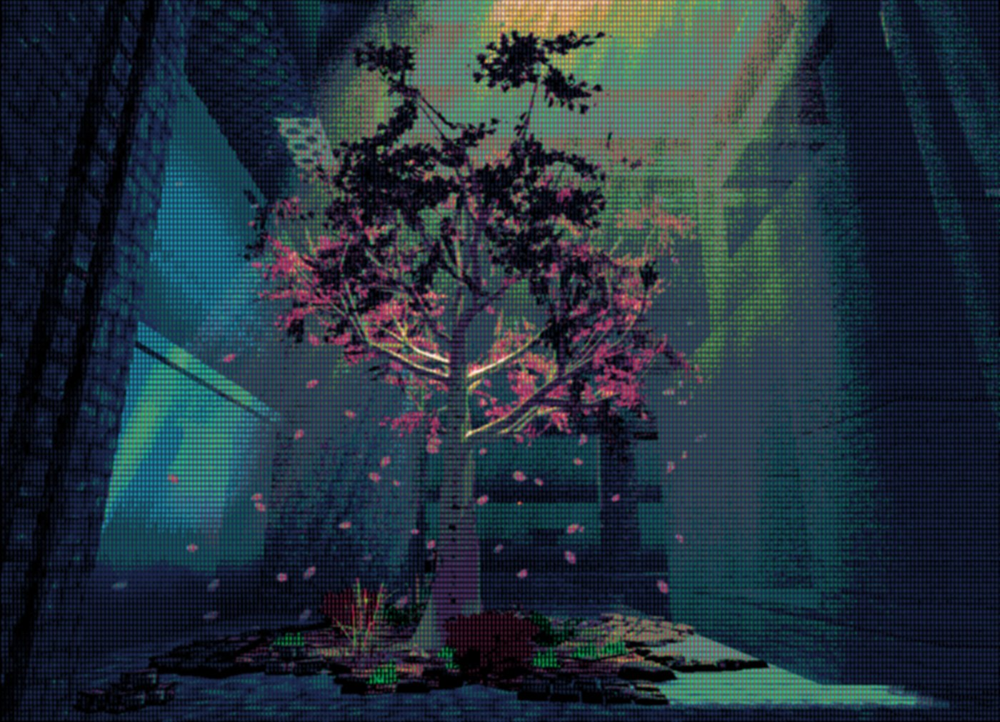
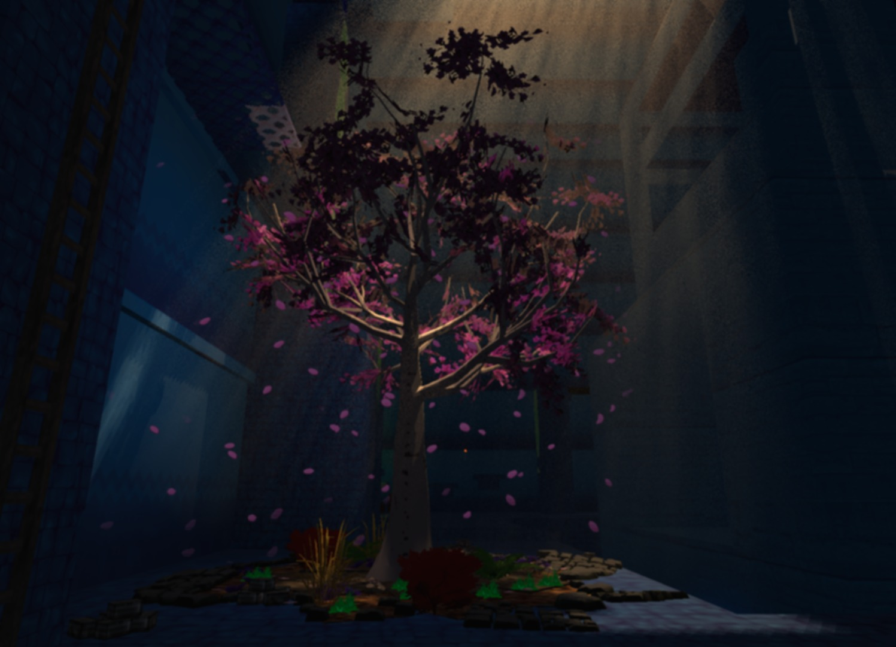
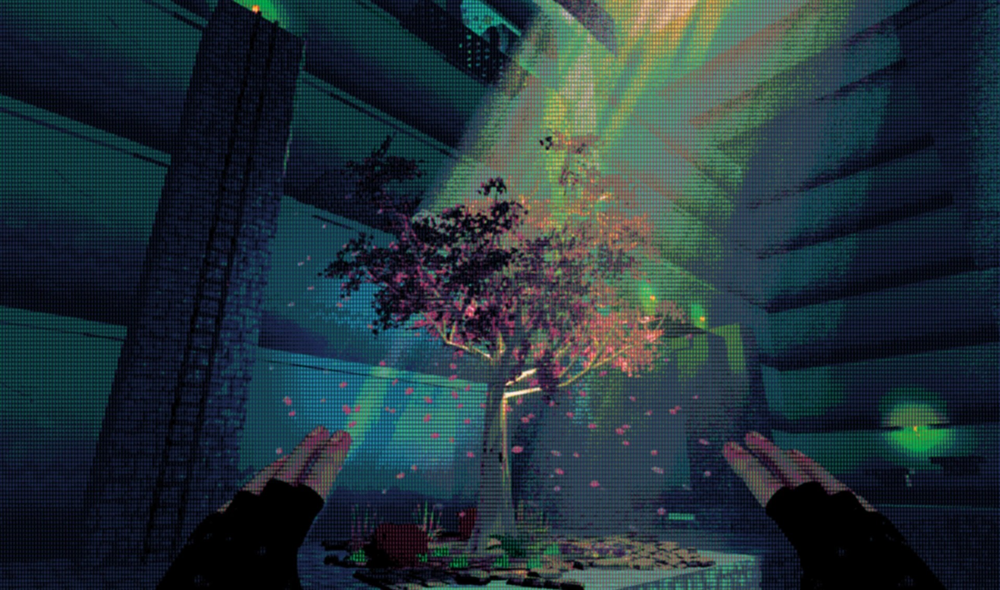
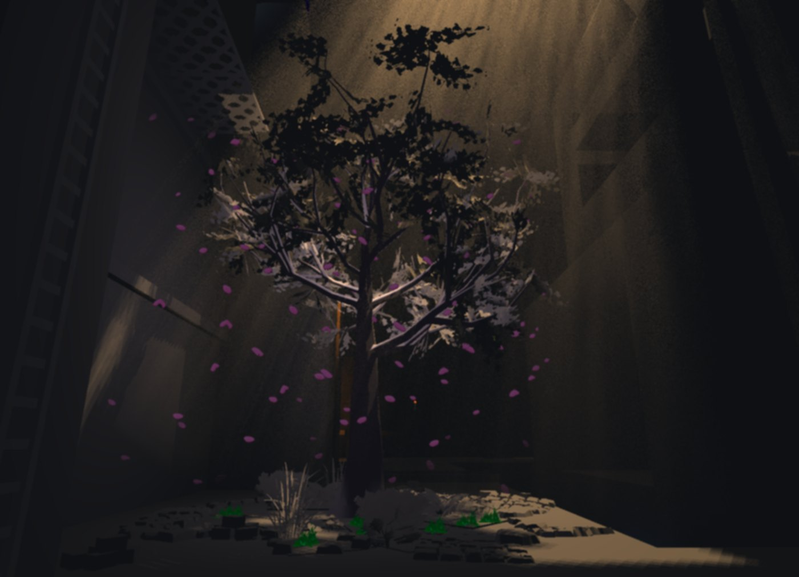
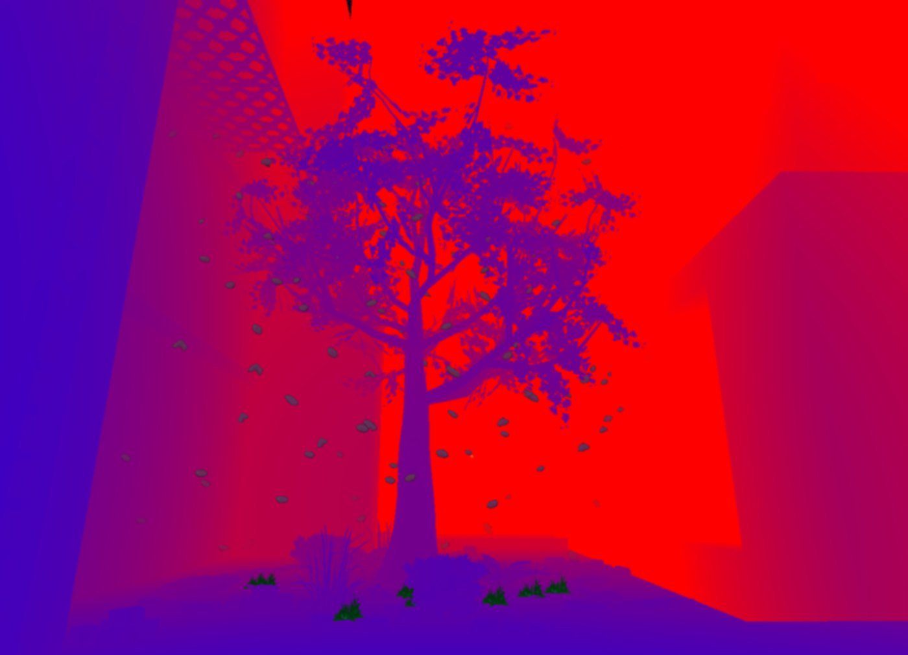
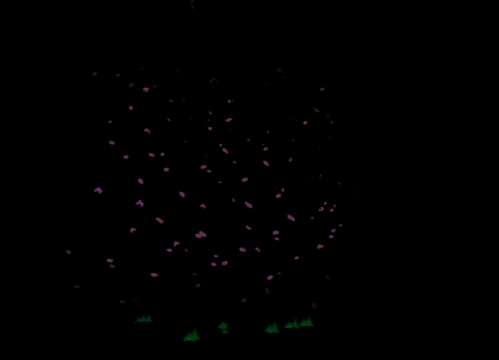
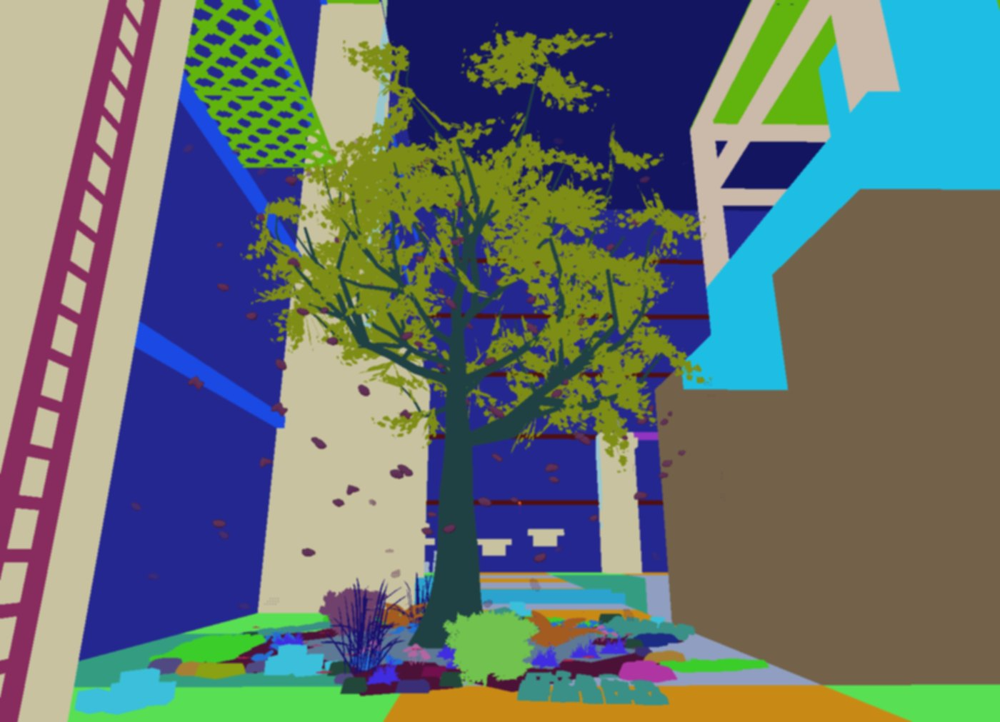

Personal engine · DirectX 12 · Day —
RetroEngine
In September 2025 I got my hands on an old CRT from the late '90s and started playing Genesis and Super Nintendo games on it. The difference from an LCD blew me away, and I went down the rabbit hole of how CRTs actually work. On October 31st, 2025, RetroEngine was born: a DirectX 12 engine, written from scratch, that simulates the tube instead of faking it with a post-process filter. It's since grown into a real engine, with an editor, streaming terrain, and a game being built inside it.
Inside the engine
These are the engine's own debug views for a single frame, captured with the snapshot tool I built into the editor. Step through them in the order the engine runs them.

Play with it
A hands-on version that runs live in your browser, fed with the raw scene from above. Step through the stages, slow the beam down to watch it scan, swap the mask, and zoom in on the phosphors.

A simplified WebGL version written for this page, using textbook models of each stage. The engine does this in HLSL on DirectX 12, with more stages and its own tuning.
Your browser doesn't support WebGL2, so the live demo can't run here.
60 FPS on the bottom 10–15%
The AMD Radeon 660M is an integrated GPU with six RDNA2 compute units, in the bottom 10–15% of gaming hardware.
RetroEngine holds a stable 60 FPS on it with all of this running at once:
- The full CRT pipeline
- Terrain streaming and procedural generation
- HDR rendering
- The editor
That's before GPU instancing, frustum culling, or LODs, which are still ahead.

Everything else, also from scratch
Shared-ownership texture cache
Textures used to belong to the terrain chunk that loaded them, so one 4096×4096 terrain texture was duplicated in every chunk. A global cache with deterministic keys means each texture is loaded once and shared. Memory stays flat no matter how many chunks are loaded.
ECS
A component-based entity system with strict GPU resource ownership, deterministic lifetimes, multi-scene loading, safe deletion, and scenes saved as parameters only.
Terrain streaming
Chunks stream in around the camera. Whole worlds regenerate deterministically from a seed and a handful of parameters.
Deterministic time
Engine-level pause, rewind, and replay. Inputs and scene state scrub along a timeline, which makes debugging much easier.
Editor
A dockable ImGui editor: object picking, snapping gizmos, a chunk palette, live material authoring, and a GPU memory panel showing texture memory, SRVs, and instance counts.
Lighting
Directional shadow maps, point lights, volumetric light shafts, and fog in a single fullscreen pass, with separate directional and ambient color for predictable art direction.
Lighting, layer by layer
The same frame, split into its lighting layers.




Built in public
Every step is written up on retrogameengine.com.
- 01 Getting Started
- 02 Solid Ground
- 03 A New Dimension for 2D
- 04 Foundations of the Editor
- 05 Getting Real About This Update
- 06 Dragging RetroEngine Out of the Void
- 07 From Rendering Objects to Building Worlds
- 08 After Scenes, Something Still Felt Off
- 09 Merry Christmas!
- 10 Time to Clean Up the CRT Pipeline
- 11 The Can of Worms I Wasn't Expecting
- 12 A Walkthrough of the Engine Today
- 13 I Need Better Tools
- 14 The Point of Lighting
- 15 Iteration Speed Is the Real Feature
- 16 From Concept to Contact
- 17 Indoor Tools Exposed an Outdoor Problem
- 18 Terrain Grew Up
- 19 Seeing Through the Mist
- 20 A Short Break From Deep Dives
- 21 The Moment It Broke
- 22 Quick Update
- 23 The Big One
- 24 Waking Up